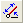
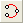
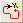
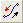
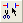
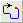

Tools
Transformation Window
- T
Description
Opens the transformation window.
Align TL/AOT Cap
- Shift + T
Description
Aligns the cap with the face of an AOT/TL file.
Notes
Make sure to select the cap first before activating.
Only works on TL/AOT cases.
Line Tool
- CapsLock
Description
Activates the line tool in Esprit.
Extrude Tool
- Ctrl + E
Description
Activates the line tool in Esprit.
Circle Tool
- Shift + C
Description
Activates the circle tool in Esprit.
Three Point Tool
- Shift + X2
Description
Activates the three point arc tool in Esprit.
Geometry to Path
- Shift + Q
Description
Converts selected geometry to a path.
Swap Path Direction
- Shift + W
Description
Reverses the direction of a path.
Trim Tool
- Alt + X
- X1
Description
Activates the trim tool in Esprit.
Path Tool
- Shift + CapsLock
- X2
Description
Activates the path drawing tool.
